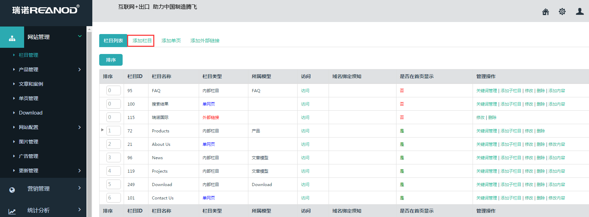
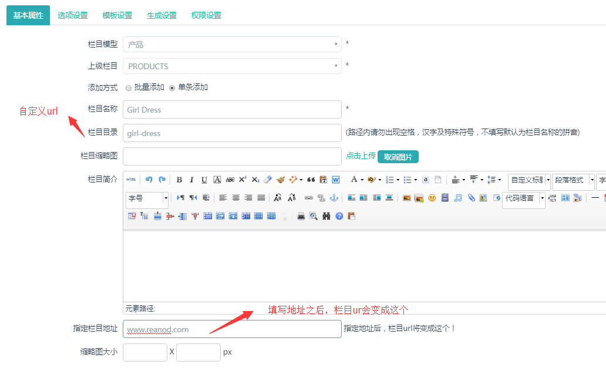
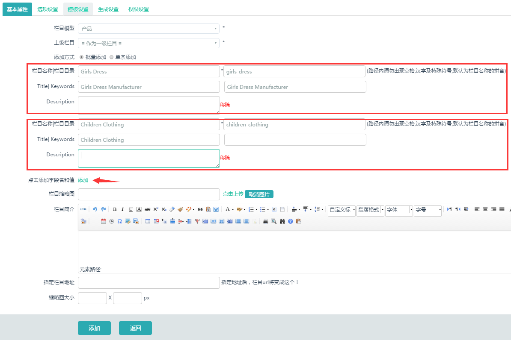
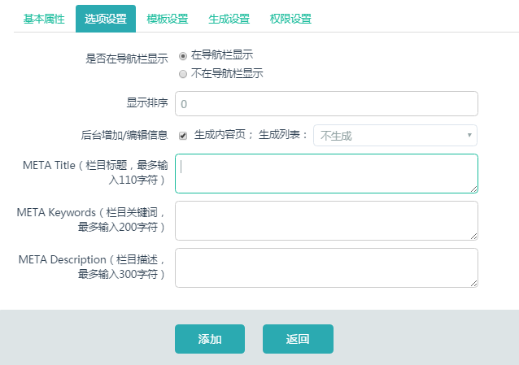

2.1一级产品分类的添加
2.1.1 点击左侧的”网站管理”--“栏目管理”--“添加栏目”

2.1.2 选择栏目模型（产品）---选择上级栏目（Products）---填写栏目名称---栏目目录---关键词---（可批量添加或者单条添加）

可批量添加栏目，填写栏目名称，栏目目录，栏目页面关键词，如下图，已经添加了两个栏目，如果还需增加栏目，点击“添加”按钮，便出现新的一组“栏目名称，栏目目录，栏目页面关键词”。

2.1.3 单个栏目的关键词设置

【栏目目录（英文目录）的正确写法是例如：LED Panel Light 那么栏目目录的正确写法是 led-panel-light】
【***产品名称的首字母都要大写 目录要小写】
【栏目目录单词之间一定要加“-”中杠线】
【TDK中不要有特殊字符，如引号等】
备注：产品二级分类的添加和这是一模一样的